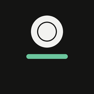

Segna entrate e uscite in pochi tocchi, tieni separati i tuoi conti e metti da parte i soldi per quello che vuoi comprare. Guarda il video: è l'app vera, usata dall'inizio alla fine.
Senza audio: le spiegazioni sono scritte nel video. Puoi mandarlo a chi vuole provare Keepo.
Le stesse funzioni una alla volta, con il punto da toccare. Scorre da sola: puoi fermarla o scegliere un capitolo.
Keepo è un'app web: niente App Store, si installa dal browser.
Apri vers3tt.github.io/salvadanaio. Su iPhone usa Safari → Condividi → Aggiungi alla schermata Home; su Mac, Safari → File → Aggiungi al Dock.
Email e password: i dati restano sincronizzati tra telefono e computer e non li perdi se cambi dispositivo. Senza account restano solo su quel dispositivo.
Per segnare spese con Siri, dai widget, dal Centro di Controllo, dall'Apple Watch e in automatico con Apple Pay. Li trovi in Altro → Siri e widget.
Per leggere gli scontrini. La foto viene letta sul telefono e non viene inviata a nessuno.
Serve per sincronizzare, leggere i prezzi dai link e la prima lettura di uno scontrino. Puoi segnare spese anche offline: si inviano appena torni online.
Ogni account vede solo i propri dati: le regole del database lo impediscono a chiunque altro. Keepo non si collega alla tua banca e non chiede dati della carta. Puoi esportare un backup o eliminare l'account in qualsiasi momento da Altro.
Tutto il saldo conta per ogni obiettivo: se hai 300 € e un obiettivo da 279 €, è raggiunto. Quando premi "L'ho comprato" Keepo segna l'uscita (anche divisa tra più conti) e gli altri obiettivi si aggiornano.
Quando incolli il link di un prodotto Keepo apre la pagina e legge prezzo, nome e foto. Poi la ricontrolla ogni mattina e costruisce il grafico: ti dice quando il prezzo è il più basso visto. Alcuni siti bloccano la lettura automatica: in quel caso lo scrivi tu.
Apri il movimento e tocca "Dividi tra più conti": scrivi quanto è uscito da ogni conto, il resto va da solo senza conto. Per spostare soldi tra conti (es. una ricarica di Hype) usa "Sposta tra conti": non conta come entrata o uscita.
iOS non aggiorna nome e icona delle app web. Elimina l'app dalla schermata Home e aggiungila di nuovo da Safari: se hai un account, i dati restano.
Sì. In futuro alcune funzioni avanzate, come il collegamento automatico dei conti bancari, potrebbero far parte di un abbonamento Premium facoltativo. Quello che usi oggi resta gratuito.